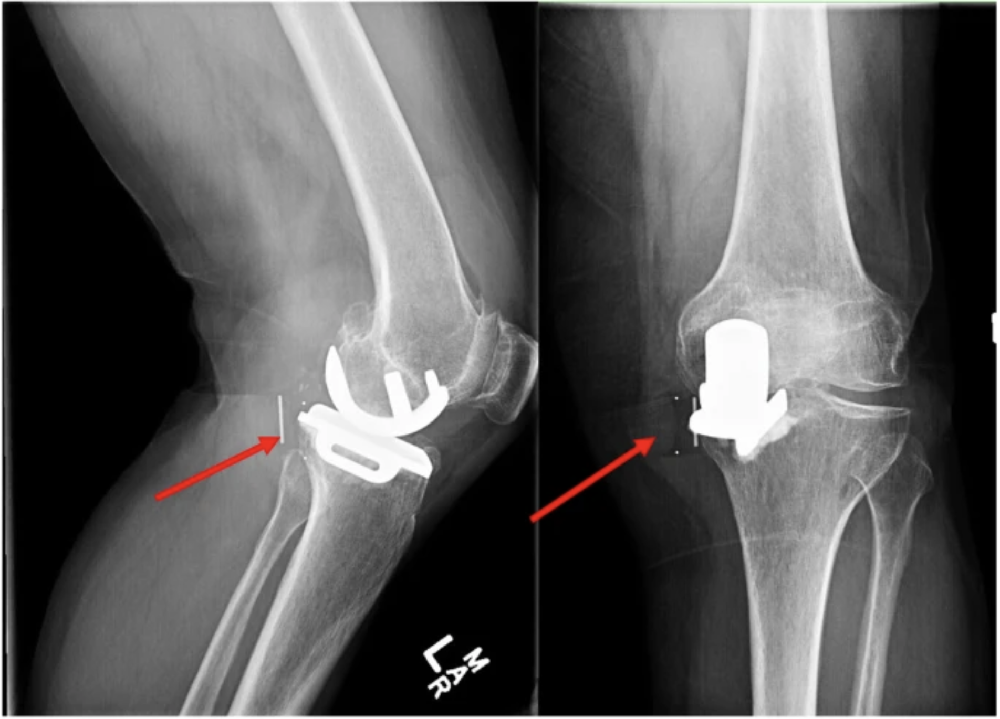

-------- Explanation ---------
Question 1
Option 1: Neurovascular checks and Homan's test to rule out deep vein thrombosis
Correct. Calf swelling is present, the patient may be at risk for DVT post-surgery. Homan's test is negative and calf is non-tender, which helps rule out DVT.
Option 2: Gait assessment
Correct. Severe pain on stance phase may indicated implant failure. One of the possibilities may be due to bearing dislocation as the femoral condyle is not articulating congruently against the bearing and it may directly impinge on the tibial tray, dislocated bearing or soft tissue. This leads to severe pain on stance phase of walking.
Option 3: Stability testing (varus/valgus stress at 30°, anterior drawer)
Correct. No obvious laxity is found. This helps differentiate from ligament injury or implant instability and narrows it toward an intra-articular mechanical issue.
Option 4: Palpation along the medial joint line during flexion/extension
Correct. Palpation along the medial joint line for a mobile structure during flexion/extension helps to identify the bearing location. In this patient, the mass is prominent on knee extension but disappears on knee flexion. This suggests the problem may be more likely due to bearing dislocation, rather than metal implant crushing.
Question 2
Option 1: Apply RICE protocol, continue exercise as tolerated and review condition in 3 days.
Incorrect. Continuing exercises as tolerated is unsafe here. The patient has acute mechanical symptoms (locking, catching, instability) and a palpable mass. Exercise may worsen the dislocation, increasing swelling, or causing further damage to the bearing or components.
Option 2: Suggest patient to have R NWB walking with a frame first and review condition in 3 days.
Incorrect. Non-weight-bearing (NWB) might temporarily reduce stress, but it does not address the underlying mechanical issue. Delaying proper review by 3 days while the knee is locking and unstable is inappropriate.
Option 3: Suspend exercise and refer patient to the orthopedic team for same day review
Correct. This is the safest and most appropriate action. Sudden clunk, locking, palpable mass and marked decrease ROM at 1-month post-op may indicate bearing dislocation or other intra-articular mechanical failure. This warrants an urgent orthopedic surgeon attention for immediate review.
Option 4: Suspend strengthening exercise, but continue range ROM ex as tolerated and recheck patient range at the end of PTJC
Incorrect. When there is clear mechanical locking and a palpable mass, further ROM exercise may worsen the condition. Suspending all intervention until orthopedic review is wiser.
Diagnosis:
Oxford Knee bearing dislocation

Fig.1 AP & lateral radiographs of the left knee demonstrating a cemented medial Oxford unicompartmental knee arthroplasty with posteromedial dislocation of the polyethylene mobile bearing insert. There is also significant lateral and patellofemoral osteoarthritis with associated anterior femoral and patellar osteophytosis [4]
A meta-analysis done by Mohammad et al. [1] with 8658 UKA patients across 15 studies found that the main causes of UKA revision operation was lateral disease progression (1.42 %), aseptic loosening (1.25 %), bearing dislocation (0.58 %), and pain (0.57 %).
Imbalance of the flexion and extension gap, malposition of components, impingement by osteophytes and cement, laxity of medial collateral ligament, traumatic accident and habitual high knee flexion may contribute to UKA bearing dislocation. [2]
Possible treatment of UKA dislocation included MCL reconstruction, arthroscopic debridement, mobile-bearing replacement and revision TKR, in which revision is more likely to be chosen with a higher successful rate. [3]
1. Mohammad, H. R., Strickland, L., Hamilton, T. W., & Murray, D. W. (2018). Long-term outcomes of over 8,000 medial Oxford Phase 3 Unicompartmental Knees—a systematic review. Acta orthopaedica, 89(1), 101-107.
2. Guan, Z. P., & Li, Z. (2020). Prevention and treatment of bearing dislocation of mobile-bearing unicompartmental knee arthroplasty. Zhonghua wai ke za zhi [Chinese Journal of Surgery], 58(6), 416-419.
3. Guo, Y., Lan, S., Sun, K., Cangjue, D., Lunzhu, C., & Li, J. (2025). A comprehensive review of complications following unicompartmental knee arthroplasty. Asian Journal of Surgery.
4. Vajapey, S.P., Alvarez, P.M. & Chonko, D. Bearing failure in a mobile bearing unicompartmental knee arthroplasty: an uncommon presentation of an implant-specific complication. Arthroplasty 3, 16 (2021). https://doi.org/10.1186/s42836-021-00073-9
Case Creator: Agnes Chan